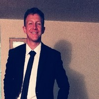

¿Para qué estoy en Barnasha? ¡Hola! Estoy en Barnasha porque quiero hacer parte del cambio en la vida de las personas del país. En Colombia tenemos varias maldiciones de nuestra herencia histórica: querer que nuestras metas se cumplan instantáneamente sin esfuerzo, esperar que los demás hagan las cosas por nosotros mientras nos quejamos y poner nuestro propio beneficio por sobre el de los demás. Estoy aquí para participar activamente en ese cambio de mentalidad, para que todos nuestros clientes comprendan el valor de la disciplina y trabajo constante, el valor de apropiarse de la responsabilidad por nuestras metas y el valor de velar por el mayor beneficio nuestro y de los demás en todas las dimensiones de nuestra vida. ¿Qué espero lograr? Espero que logremos concientizar a la mayor cantidad de personas posible. Personas que se unan a este despertar consciente para tomar las riendas de su vida y ser ejemplo de un cambio positivo en la sociedad. Espero que todos nuestros clientes y aliados se sientan como los héroes de su vida para ayudarnos a seguir esparciendo esta forma de vibrar con el universo: un buen paso a la vez en pro de nosotros y de los demás. Experiencia: Scrum Master: 3 años de experiencia extrayendo el potencial de los equipos de desarrollo de software en empresas grandes (Bancolombia) y emprendimientos (Rappi). Consultor de software: 6 meses de experiencia aplicando el modelo de ventas enseñar, adaptar y controlar. Consultor financiero: 6 meses de experiencia como consultor financiero de la Dirección de publicaciones del ejército nacional. Analista de investigación: 6 meses de práctica empresarial en consultoría de investigación de mercados cuantitativa y cualitativa. Estudios: Certified Scrum Master, Scrum Institute. Administración de Empresas, Universidad de Los Andes. Una frase: Las personas disciplinadas son más exitosas, felices y saludables. Dr. T.P.Chia